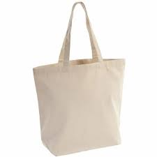

About Canvas Tote Bags
Our canvas tote bags are crafted from high-quality, eco-friendly cotton canvas. They are washable, long-lasting, and can be custom printed with your logo or design.
Key Features
- Material: 100% cotton canvas (8oz/10oz/12oz)
- Size: Standard 15"x16" (custom sizes available)
- Handles: Strong, double-stitched for durability
- Reusable, washable, and biodegradable
- Custom printing and bulk orders accepted
Applications
- Shopping, groceries, and daily use
- Corporate gifting and promotional events
- Branding for businesses and NGOs
Why Choose JontyMart?
- Export quality and competitive pricing
- Custom design and private label options
- Fast delivery and reliable service
Care Instructions
Hand wash or machine wash in cold water. Do not bleach. Dry in shade for long life.